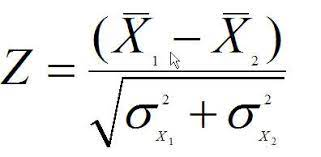
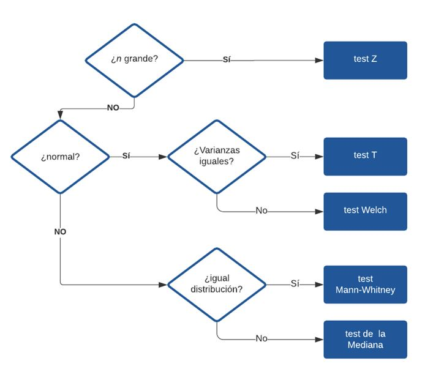
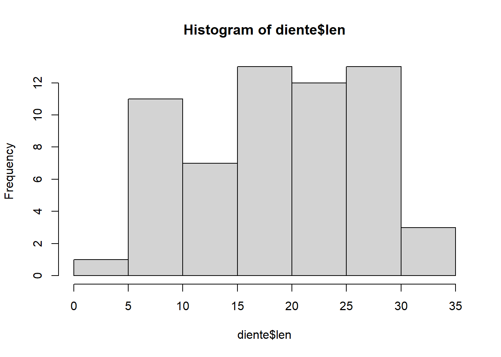
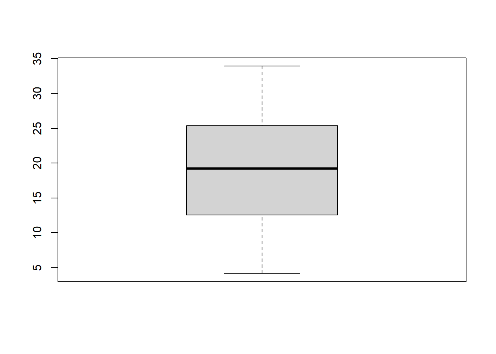
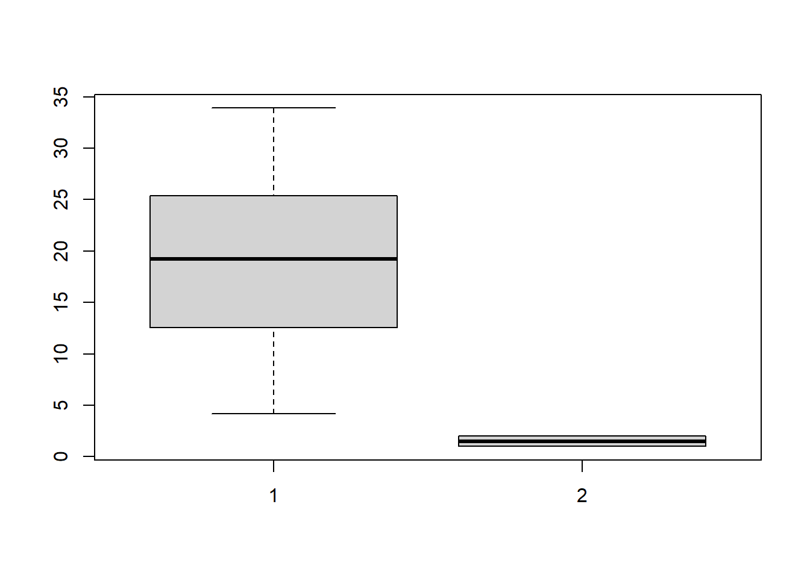
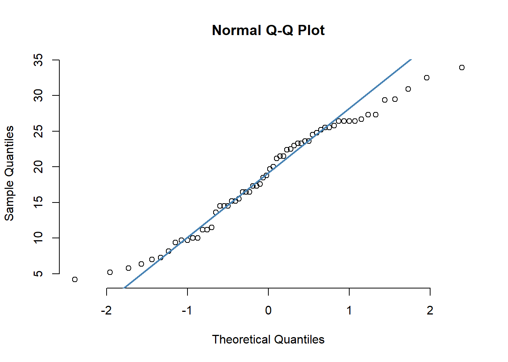

Chapter 10 Test de contraste de variables continuas
En este capítulo veremos como comparar variables continuas entre dos grupos, esto incluye el test t, el test Z y algunas opciones no-paramétricas
10.1 Test Z
Supongamos que queremos comparar la altura de dos grupos de 800 niños, unos que han recibido hormona de crecimiento por un año, y otros que no.
Nosotros, como investigadores, queremos demostrar que el tratamiento de un año con hormona de crecimiento impacta sobre la altura de los niños.
Una forma de demostrar esto es que la media de la altura de los niños tratados es significativamente mayor que la media de los no tratados (lo dicho de otra forma, que las diferencias en la altura de un grupo y otro no son producto del azar, sino del efecto del tratamiento)
Antes de empezar tenemos que preguntarnos ¿Es la media un buen descriptor de este grupo? Sino lo es, no tiene sentido comparar medias, pues, no son la mejor descripción de ello. O sea que antes de empezar debemos chequear la normalidad de estas muestras.
El test z es un test que se construye con las siguientes hipótesis:
Hipótesis nula (H0): las medias de ambos grupos son iguales (en otras palabras que sus diferencias se deben solamente al azar)
Hipótesis alternativa (H1): es que las medias de ambos grupos son diferentes (esas diferencias no pueden atribuirse al azar).
La fórmula del estadístico Z es la siguiente:

En donde x raya (las X con una rayita encima) representan las medias de ambos grupos y sigma la varianza. Como vemos evalúa la distancia entre las medias sobre su variación. Una vez obtenido el estadístico z es contrastado con una tabla de distribución normal (la tabla z de Gauss), en donde consta la probabilidad que este número sea originado por el azar (el p-valor).
Es decir mientras menor sea la probabilidad hay mas chances de que esta diferencia sea real y no producto del azar. O sea de que las medias de ambos grupos sean diferentes por efecto del tratamiento.
Hagamos un ejemplo utilizando una base de datos. Vamos a utilizar los datos de los automóviles de la base “mtcars”. Esta base presenta datos extraídos de la revista Motor Trend US de 1974 y comprenden el consumo de combustible y 10 aspectos del diseño y el rendimiento de 32 automóviles (modelos de 1973-74).
Supongamos que queremos demostrar que la media de consumo en millas por galón (la variable “mpg”) es distinto si el motor (la variable “vs”) tiene los cilindros en V (0) o rectos (1)
El planteamiento de nuestro test debería ser:
Ho: la media de consumo entre los motores en v y los motores rectos es igual
H1:la media de consumo entre los motores en v y los motores rectos es distinta
data<-mtcars
data$vs<-as.factor(data$vs) #para convertirla en una variable dicotómica
library(BSDA)##
## Attaching package: 'BSDA'## The following objects are masked from 'package:carData':
##
## Vocab, Wool## The following object is masked from 'package:datasets':
##
## Orangez.test(data$mpg[data$vs == 1],sigma.x=sd(data$mpg[data$vs == 1]), data$mpg[data$vs == 0], sigma.y= sd(data$mpg[data$vs == 0]))##
## Two-sample z-Test
##
## data: data$mpg[data$vs == 1] and data$mpg[data$vs == 0]
## z = 4.6671, p-value = 3.056e-06
## alternative hypothesis: true difference in means is not equal to 0
## 95 percent confidence interval:
## 4.605813 11.275139
## sample estimates:
## mean of x mean of y
## 24.55714 16.61667El p valor es de 0.00000305, es decir es significativo. Esto dice que el consumo medio de un grupo es significativamente distinto del otro. En este caso el motor en V tuvo una media de 24.55 millas por galón (identificado como la variable x) y el grupo recto de 16.61 (identificado como la y). La sintaxis de este test como han visto es sumamente compleja, necesita que le incorporemos cada grupo como una variable filtrada y cada desvío estandard calculado también (fíjense que hay una forma anidada), para peor esta conclusiones, están mal. Veamos por qué:
10.1.1 Supuestos del test Z
Existen condiciones muy particulares en donde se puede aplicar el test z, si las mismas no se cumplen, sus resultados son erróneos:
La distribución de las muestras debe aproximarse a la normal
Las muestras de cada población deben ser independientes entre sí
Las desviaciones estándar de la población deben ser conocidos
Los tamaños de las muestras deben ser grandes (es decir, n1≥30 y n2≥30, idealmente n1≥100 y n2≥100)
En nuestro caso la muestra nunca fue testeada para su normalidad, por ende puede que estemos completamente equivocados. Tampoco conocemos las desviaciones estandards de las poblaciones (sólo las de las muestras) y nuestro tamaño muestra no es grande. Miremos:
table(data$vs)##
## 0 1
## 18 14¡n1=18 y n2=14!
Por ende nuestro test no debería ser administrado. El test z tiene un poder más anecdótico (es el padre de todos los test basados en la media) que real. Estos supuestos estrictos hace que sean muy raras las condiciones en los que se puede aplicar, por eso su sintaxis es tan mala (nadie se ha preocupado por refinarla), en muchos softwares (como SPSS) ni siquiera existe. Existe una alternativa más flexible y más poderosa que el test Z: el test t
10.2 Test t de Student
Una de las pruebas más comunes en estadística es la prueba t, utilizada para determinar si las medias de dos grupos son iguales entre sí.
La hipótesis de de trabajo de la prueba son las siguientes:
Hipótesis nula (H0): las medias de ambos grupos son iguales (en otras palabras que sus diferencias se deben solamente al azar)
Hipótesis alternativa (H1): es que las medias de ambos grupos son diferentes (esas diferencias no pueden atribuirse al azar).
La prueba t de Student hereda muchas similitudes de su hermana mayor, la prueba z, sin embargo agrega una modificación clave, la distribución de contraste. En este caso la distribución de contraste es la distribución de Student esta tiene la particularidad de corregirse a través de los grados de libertad un concepto íntimamente ligado al tamaño muestral.
Ambas pruebas (la t y la z) sirven para comparar las medias de dos grupos cuyas distribuciones se aproximan a la normal (no olviden el importante capítulo de parametricidad y vuelvan a visitarlo), sin embargo la prueba t funciona con mayor exactitud que la z cuando las muestras son más pequeñas (menor de 100 sujetos) debido a su corrección por los grados de libertad.
Por esta propiedad es una de las pruebas más elegidas a la hora de contrastar medias entre grupos.
Sin embargo esta prueba tampoco esta exenta de la necesidad de que se cumplan sus supuestos.
10.2.1 Supuestos de la prueba t
Escala de medición: la escala de medición aplicada a los datos recogidos sigue una escala continua u ordinal de multiples niveles (≥30)
La muestra es aleatoria simple, es decir, que los datos se recogen de una parte representativa y seleccionada al azar de la población total.
Los datos, cuando se representan, dan lugar a una distribución normal
Se utiliza un tamaño de muestra razonablemente grande (≥20)
Homogeneidad de la varianza. Existe una varianza homogénea, o igual, cuando las desviaciones estándar de las muestras son aproximadamente iguales.
Cómo vemos, no podemos escapar a conceptos claves como el tipo de variable y la asunción de normalidad. Un punto importante es la homogeneidad de las varianzas, cuando este supuesto no se da (en muchos de los casos) existe una prueba que corrige ese problema: el test de Welch.
Usemos nuestro ejemplo anterior para realizar un test t en r:
t.test(mpg ~ vs, data = data)##
## Welch Two Sample t-test
##
## data: mpg by vs
## t = -4.6671, df = 22.716, p-value = 0.0001098
## alternative hypothesis: true difference in means is not equal to 0
## 95 percent confidence interval:
## -11.462508 -4.418445
## sample estimates:
## mean in group 0 mean in group 1
## 16.61667 24.55714Como vemos hay una diferencia estadísticamente significativa. Si el supuesto de normalidad se cumple (hay que testearlo antes). Estamos en condiciones de decir que el gasto de un tipo de motor es significativamente distinto que el otro.
Notese que la sintaxis de este test es muy sencilla, básicamente sigue la siguiente regla:
t.test(variable dependiente~ variable de grupo)
Nuestra amiga la virgulilla a vuelto para quedarse.
10.3 Tests no paramétricos para comparación de variables continuas
A continuación veremos un par de alternativas a los test que requieren normalidad de la muestra, a estas alternativas se las suele llamar, no paramétricas.
10.3.1 Test U de Mann-Whitnney
La prueba U de Mann-Whitney se utiliza para comparar si existe una diferencia en la variable dependiente continua para dos grupos independientes.
A diferencia de las pruebas paramétricas, compara si la distribución de la variable dependiente es la misma para los dos grupos y, por tanto, procede de la misma población. Es decir que la media no es utilizada como centro de la comparación.
Esta prueba es tolerante a casi todos los supuestos necesario en las otras y es una gran alternativa cuando no se cumple la normalidad de la muestra.
10.3.2 Test de Wilcoxon
Esta prueba, al igual que Mann-Whitnney no compara medidas de centralidad, en este caso la comparación es de la forma de la distribución a través del rango, razón por la cual este test se suele llamar Prueba de suma de rangos de Wilcoxon o Wilcoxon´s sum rank test.
Con respecto a los supuestos, los únicos supuestos para realizar una prueba de Mann-Whitney o un Wilcoxon son que los dos grupos deben ser independientes y que la variable dependiente sea ordinal o continua.
Tanto Mann-Whitney como Wilcoxon sirven para demostrar que ambas muestras pertenecen a poblaciones distintas (o dicho de otra forma, que son significativamente diferentes). En ambos no se puede hablar de comparación de medias, pero si de muestras. Sin embargo, para poder informar de la diferencia entre grupos como medianas, la forma de las distribuciones de la variable dependiente por grupo debe ser similar. No importa si las distribuciones tengan una ubicación diferente en el eje x, sólo tienen que tener una forma similar.
Veamos como estudiaríamos el caso anterior con un test de Wilcoxon:
wilcox.test(mpg ~ vs, data = data)##
## Wilcoxon rank sum test with continuity correction
##
## data: mpg by vs
## W = 22.5, p-value = 9.034e-05
## alternative hypothesis: true location shift is not equal to 0Como ven, la sintaxis es muy similar:
wilcox.test(variable dependiente~ variable de grupo)
10.3.3 test de la Mediana
Esta es una prueba no paramétrica para varias muestras independientes. La prueba de la mediana está diseñada para examinar si varias muestras proceden de poblaciones que tienen la misma mediana. Es tolerante a la irregularidad de formas de distribución en los grupos y es una opción cuando Wilcoxon y Mann-Whitney no puede aplicarse. Es una prueba bastante impopular pero versátil.
10.4 Algoritmo para la decisión de la prueba
Con los supuestos y las opciones vistas en este capítulo podemos construir un algoritmo que nos sirva para decidir que test utilizar.
Aquí una versión simplificada:

10.5 Ejercicios:
Hoy vamos a realizar un ejercicio integrador, vamos a trabajar con la base “ToothGrowth” del paquete “datasets”En esta base esta registrada la respuesta de la longitud de los odontoblastos (células responsables del crecimiento de los dientes) en 60 cobayas (variable “len”). Cada animal recibió uno de los tres niveles de dosis de vitamina C (0,5, 1 y 2 mg/día) mediante uno de los dos métodos de administración (la variable “supp”), zumo de naranja (OJ) o ácido ascórbico (VC).
Queremos testear si el largo de los odontoblastos es diferentes de acuerdo a la vía de administración.
Realice todos los pasos que requiere el algoritmo, decida el test a utilizar, realícelo y saque sus conclusiones.
10.6 Respuestas:
Asumiendo que lo han intentado fuerte vamos a resolverlo
library(datasets)
diente<-ToothGrowth
#chequeamos que las variables estén bien codificadas
str(diente) #len es una continua y supp un factor, todo bien## 'data.frame': 60 obs. of 3 variables:
## $ len : num 4.2 11.5 7.3 5.8 6.4 10 11.2 11.2 5.2 7 ...
## $ supp: Factor w/ 2 levels "OJ","VC": 2 2 2 2 2 2 2 2 2 2 ...
## $ dose: num 0.5 0.5 0.5 0.5 0.5 0.5 0.5 0.5 0.5 0.5 ...¿Es el n grande?
table(diente$supp)##
## OJ VC
## 30 30Mmm, 30 por grupo no es numero como para hacer un test z, pero el test t podría funcionar
¿Es normal la muestra?
##con un histograma
hist(diente$len)
##con un boxplot
boxplot(diente$len)
boxplot(diente$len, diente$supp)
##con un qq-plot
library(stats)
qqnorm(diente$len, pch = 1, frame = FALSE)
qqline(diente$len, col = "steelblue", lwd = 2) 
## con una analítica
shapiro.test(diente$len)##
## Shapiro-Wilk normality test
##
## data: diente$len
## W = 0.96743, p-value = 0.1091ks.test(diente$len, "rnorm")## Warning in ks.test(diente$len, "rnorm"): ties should not be present for the
## Kolmogorov-Smirnov test##
## One-sample Kolmogorov-Smirnov test
##
## data: diente$len
## D = 3.5705, p-value < 2.2e-16
## alternative hypothesis: two-sidedHay evidencia gráfica y analítica de normalidad, ¡VAMOS POR EL TEST T!
t.test(diente$len ~ diente$supp)##
## Welch Two Sample t-test
##
## data: diente$len by diente$supp
## t = 1.9153, df = 55.309, p-value = 0.06063
## alternative hypothesis: true difference in means is not equal to 0
## 95 percent confidence interval:
## -0.1710156 7.5710156
## sample estimates:
## mean in group OJ mean in group VC
## 20.66333 16.96333Obtuvimos un p-valor > 0.05, no hemos alcanzado el umbral para poder rechazar la hipótesis nula, es decir que no hay suficiente evidencia apara probar que una vía de administración sea diferente que la otra en el largo de los odontoblastos.
Una reflexión final: realizar cualquiera de estos test no implica para nosotros más que una línea, pero como hemos visto, decidir cual de ellos implica un delicado proceso y múltiples test previos. Saltarse cualquiera de estos pasos es llegar a conclusiones erróneas y hacer ciencia de la Mala (si, con “M” mayúscula)